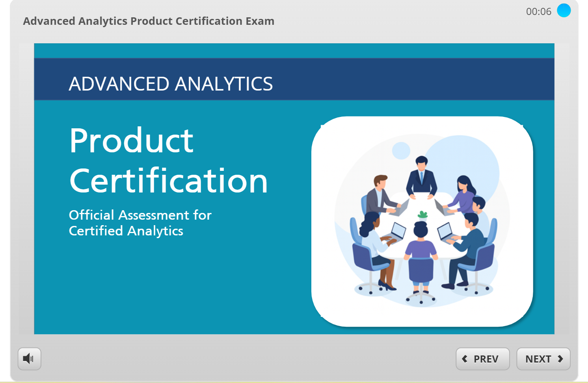

Advanced Analytics Product Certification Exam
This interactive certification exam was created in Articulate Quizmaker to assess learners’ knowledge of Advanced Analytics features, processes, and administrative capabilities.
The exam includes 20 graded questions featuring multiple-choice, true/false, and fill-in-the-blank formats. It incorporates a timed session, dynamic scoring, and a branded results slide consistent with the product’s visual design.
